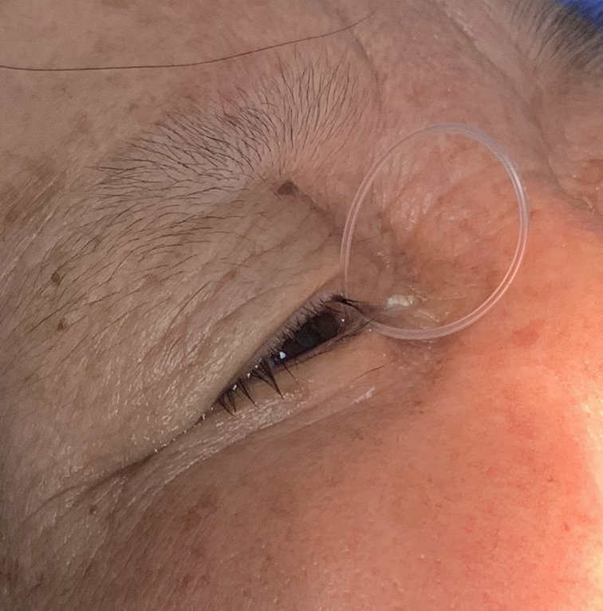
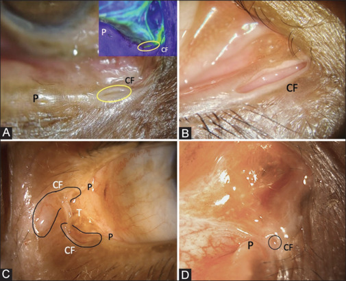
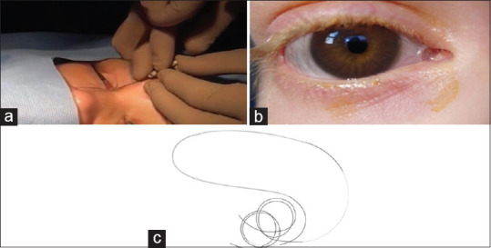
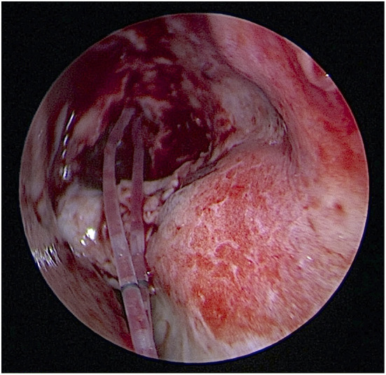

1502 — Ống silicon lệ đạo: biến chứng và khi nào tháo / Lacrimal silicone intubation: complications and timing of removal
Tags: pattern:ong-silicon pattern:bien-chung-dung-cu vung:mat vung:le-dao protocol:noi-soi-mui protocol:CT-DCG incidentaloma:khong
Mức chắc chắn (certainty): tổng hợp y văn (literature synthesis) — ghép số liệu từ 166 mắt/129 trẻ đặt ống Crawford (Saudi J Ophthalmol 2025, PMC12578414, CC BY-NC-SA 4.0), 99 mắt Monoka/Masterka ở người lớn (J Ophthalmol 2021, PMC8428989, CC BY 4.0), 80 ống cấy vi sinh sau DCR (Turk J Ophthalmol 2021, PMC8411290, CC BY-NC-ND 4.0), 13 ống nuôi cấy – màng sinh học (Cureus 2024, PMC11014746, CC BY 4.0), 45 mắt so sánh thời gian lưu 1 tháng vs 4 tháng (Front Med 2022, PMC9367212, CC BY 4.0), 60 bệnh nhân có/không đặt ống (Cureus 2023, PMC9875549, CC BY 4.0), 56 ca ngẫu nhiên (Int Ophthalmol 2024, PMC11213761, CC BY 4.0), 11 ca sa ống (J Laryngol Otol 2024, PMC11063663, CC BY 4.0) và 4 ca rò lệ quản sau đặt ống (Indian J Ophthalmol 2025, PMC12448500, CC BY-NC-SA 4.0). Ca trong quiz là ca nguyên văn của nguồn, giữ đúng mô tả gốc.
Câu chốt: ống silicon lệ đạo là một dị vật mềm nằm vắt qua điểm lệ — chỗ hẹp nhất của hệ thống lệ đạo chỉ ~0,3 mm — và chịu ~2 vạn lần mi chớp/ngày. Vì vậy câu hỏi lâm sàng không phải "có ống hay không" mà là "ống còn đúng vị trí không, có đang cắt vào điểm lệ không, và lòng ống có bị bít/màng sinh học không". Ba biến chứng đổi cách xử trí: sa ống (prolapse) — thường chỉ cần đẩy lại, không phải mổ; cắt điểm lệ (punctal cheese-wiring) — phải tháo và xử lý tổn thương lệ quản; bít lỗ thông do hạt/màng sinh học — tháo ống thôi là chưa đủ.
1. Tổng quan bệnh học – cơ chế hình ảnh (TẠI SAO)
1.1 Ống silicon lệ đạo là gì và có mấy loại
- Ống một lệ quản (monocanalicular): một đầu có bản chặn (flange/collarette) nằm ở bờ mi, đầu kia xuống ngách mũi dưới. Hai kiểu đặt: kéo (pulled — Monoka) phải luồn qua mũi; đẩy (pushed — Masterka) tự giữ nhờ đầu kim loại móc vào thành lệ quản, không cần buộc. Ưu điểm: không cần thủ thuật lấy ống lần hai vì ống thường tự ra hoặc tháo ở phòng khám.
- Ống hai lệ quản (bicanalicular): ống chữ U đi qua cả lệ quản trên và dưới, hai đầu nối nhau trong ngách mũi dưới — buộc lại (tied) thành vòng kín, hoặc để rời (untied) và dán ở tiền đình mũi. Kiểu buộc giữ ống tốt hơn nhưng nút buộc là chỗ trẻ dễ sờ, kéo.
- Vật liệu: silicon (silastic) — trơ sinh học, mềm, không tự tiêu, không phải kim loại. Chính đặc tính "trơ" này là gốc của cả hai mặt: không gây phản ứng dữ dội, nhưng không có cơ chế tự đào thải khi ống sai vị trí hoặc nhiễm màng sinh học.
1.2 Ba cơ chế gây biến chứng — và vì sao hình ảnh/lâm sàng trông như vậy
- Cơ chế cơ học (quan trọng nhất): ống là một sợi căng giữa điểm lệ và ngách mũi dưới. Mỗi lần chớp mắt, mỗi lần dụi mắt, mỗi lần ống bị kéo, sợi ống cưa qua bờ điểm lệ như dây cắt phô-mai — đúng nghĩa thuật ngữ "cheese-wiring" mà Bothra và Ali dùng khi mô tả rò lệ quản sau đặt ống (Indian J Ophthalmol 2025, PMC12448500). Điểm lệ bình thường chỉ ~0,3 mm, trong khi thân ống dày hơn — nên ống luôn tì vào thành chứ không "nằm tự do" trong lòng ống.
- Hệ quả theo thứ tự nặng dần: giãn điểm lệ → rãnh điểm lệ (slit punctum) → ống tụt vào lệ quản → cắt đứt thành lệ quản → rò lệ quản (canalicular fistula). Ở ca nặng, lỗ rò có thể to hơn điểm lệ và nước mắt thoát ra ngoài da mí thay vì vào mũi.
- Cơ chế sinh học: silicon kỵ nước → protein của nước mắt phủ thành màng → vi khuẩn bám và tạo màng sinh học (biofilm). Màng sinh học không gây sốt, không gây mủ ồ ạt mà gây tiết nhầy mạn, viêm nhẹ, hạt quanh điểm lệ — nên rất dễ bị đọc là "viêm kết mạc tái phát".
- Cơ chế giải phẫu – chỗ hẹp: ống phải đi qua lệ quản (~10 mm: 2 mm đoạn dọc + 8 mm đoạn ngang), túi lệ, rồi ống lệ đạo xương (~12 mm). Ba chỗ đổi hướng gấp khúc là ba chỗ ống dễ gập, xoắn, hoặc chọc vào niêm mạc (tạo đường hầm giả) — và cũng là ba chỗ hạt (granuloma) mọc.
1.3 Vì sao trẻ khác người lớn
- Trẻ chạm được vào nút buộc ở góc mắt trong, và nút buộc nằm ngay tầm tay khi dụi mắt → sa ống thường gặp hơn hẳn. Trong loạt 166 mắt/129 trẻ, ống buộc có thời gian lưu trung bình 3,74 tháng (SD ± 0,36) so với 2,51 tháng (SD ± 0,35) ở ống không buộc (p < 0,05); tỉ lệ còn ống đúng vị trí tại mốc 4 tháng là 92% (89/97) với ống buộc và 32% (22/69) với ống không buộc (Saudi J Ophthalmol 2025, PMC12578414).
- Nhưng "giữ được ống" không đồng nghĩa "ít rắc rối": ống buộc làm trẻ khó chịu và phải khám nhiều hơn — trung bình 1,9 lần so với 1,1 lần (p < 0,05); trong 32 lần khám sớm của nhóm buộc có 15 lần là cấp cứu vì sa ống, còn nhóm không buộc 0/9 lần (Saudi J Ophthalmol 2025). Đây là con số ít được nói: cái giá của việc giữ ống là các chuyến cấp cứu.
- Tỉ lệ tiết ống ở trẻ trong y văn: 14,8%–41,4%; ở người lớn sau DCR, các thử nghiệm ngẫu nhiên báo 1,5%–16,7% (Saudi J Ophthalmol 2025 dẫn lại). Con số này giải thích vì sao sa ống là biến chứng hay gặp nhất, không phải biến chứng hiếm.
1.4 Vì sao ống "bẩn" mà mắt không đỏ rực
- Trong 80 ống lấy ra sau DCR, cấy dương tính 96,2% (77/80), với 109 chủng: Gram dương 57,8%, Gram âm 34,0%, nấm 8,2%; S. aureus chiếm 66,6% các chủng Gram dương; 48,8% ống chỉ có 1 loài, nhưng 15% có 3 loài (Turk J Ophthalmol 2021, PMC8411290). Không có triệu chứng nhiễm trùng ở phần lớn bệnh nhân — tức đây là cộng sinh/màng sinh học, không phải viêm mủ.
- Ống lưu càng lâu càng nhiều loài: nhóm lấy ống ≥ 12 tuần có tỉ lệ mọc 3 loài cao hơn nhóm lấy sớm (p = 0,04) (Turk J Ophthalmol 2021). Trên 13 ống lấy ở tháng thứ 6, 10 ống mọc vi khuẩn, và 8/10 là sinh màng sinh học trung bình–mạnh (Cureus 2024, PMC11014746). Một nghiên cứu dẫn trong bài đó ghi 90% mảnh ống lấy ở tuần 8 có vi khuẩn trong khung màng sinh học.
- Vì sao điều này quan trọng với nhà hình ảnh: màng sinh học và hạt quanh ống không tạo khối cản quang, không tạo ổ dịch — chúng chỉ làm hẹp lòng, bít lỗ thông. Trên mọi phương tiện hình ảnh, dấu hiệu là gián tiếp: ứ nước mắt, giãn túi lệ nhẹ, hoặc không thấy cột cản quang đi qua trên CT-DCG.
1.5 Ống silicon trên hình ảnh: thấy gì, không thấy gì
- Siêu âm: không dùng để đánh giá ống (không có cửa sổ âm tốt cho lệ quản).
- CT: ống silicon không phải kim loại, không cản quang mạnh; trên cửa sổ xương nó chỉ là cấu trúc đậm độ mô mềm mảnh chạy trong ống lệ đạo xương, gần như trùng đậm độ niêm mạc — không thể dùng CT để khẳng định ống còn nguyên, đứt, hay đúng vị trí. Điều CT làm tốt: xương ống lệ đạo, lamina papyracea, xoang sàng, khối trong hốc mắt, mảnh xương/dị vật cản quang.
- CT-DCG (bơm cản quang vào lệ quản): đây là bài kiểm tra chức năng–giải phẫu: cột thuốc dừng ở đâu thì tắc ở đó, và thuốc có iod nên rất cản quang. Khi ống còn lưu, cột thuốc chạy quanh ống — nên đừng nhầm "không thấy cột thuốc" với "không có ống".
- Nội soi mũi: là chuẩn vàng để nhìn ống ở ngách mũi dưới — thấy ống chạy qua lỗ thông, thấy nút buộc, thấy mô hạt. Trong mổ DCR nội soi, ống đẩy kiểu Nunchaku được đưa qua cả hai điểm lệ vào mũi không cần nút buộc (Front Med 2022, PMC9367212).
- Đèn khe + nhuộm fluorescein + bơm rửa: ba động tác rẻ nhất và quyết định nhất; hình ảnh chỉ để trả lời câu hỏi giải phẫu khi ba động tác này không giải thích được.
1.6 Số liệu định lượng nằm lòng
| Đại lượng | Con số | Nguồn |
|---|---|---|
| Đường kính điểm lệ bình thường | ~0,3 mm | giải phẫu kinh điển |
| Chiều dài lệ quản | ~10 mm (2 mm dọc + 8 mm ngang) | giải phẫu kinh điển |
| Chiều dài ống lệ đạo xương | ~12 mm | giải phẫu kinh điển |
| Tần số chớp mắt | ~15–20 lần/phút (≈ 2 vạn lần/ngày) | sinh lý |
| Tiết/sa ống ở trẻ | 14,8%–41,4% | PMC12578414 (dẫn lại) |
| Tiết ống ở người lớn sau DCR (RCT) | 1,5%–16,7% | PMC12578414 (dẫn lại) |
| Còn ống đúng vị trí ở 4 tháng: buộc vs không buộc | 92% (89/97) vs 32% (22/69) | PMC12578414 |
| Thời gian lưu trung bình: buộc vs không buộc | 3,74 vs 2,51 tháng | PMC12578414 |
| Cấy dương tính trên ống lấy ra | 96,2% (77/80) | PMC8411290 |
| S. aureus trong các chủng Gram dương | 66,6% | PMC8411290 |
| Mọc 3 loài khi lưu ≥ 12 tuần | cao hơn có ý nghĩa (p = 0,04) | PMC8411290 |
| Màng sinh học trên mảnh ống tuần 8 | 90% | PMC11014746 (dẫn lại) |
| Thành công DCR có ống vs không ống (6 tháng) | 90% vs 93,3% (p = 0,64) | PMC9875549 |
| Thành công DCR có ống vs không ống (12 tháng) | 80% vs 76,6% (p = 0,71) | PMC9875549 |
| Thành công khi lưu 1 tháng (BCI) vs 4 tháng (MCI) | 100/87/87% vs 95/91/82% (lúc tháo/1 tháng/3 tháng sau tháo) | PMC9367212 |
| Đẩy lại ống sa thành công | 9/11 ca (81,8%) | PMC11063663 |
2. Mẫu hình + chẩn đoán phân biệt theo vị trí và thời điểm (Gamut)
- Trục 1 — Vị trí tổn thương (đọc theo dòng chảy nước mắt):
- Điểm lệ / góc mắt trong: sa ống, rãnh điểm lệ, hạt quanh điểm lệ, rò lệ quản.
- Lệ quản: ống cắt qua thành, đứt lệ quản, hẹp lệ quản do xơ sau tháo ống.
- Túi lệ – lỗ thông: hạt bít lỗ thông sau DCR, ống không đi qua lỗ thông (đặt sai), hẹp tái phát.
- Ngách mũi dưới: nút buộc gây kích thích, dính niêm mạc, ống nằm ngoài lỗ thông.
- Giác mạc: đầu ống cứng/lòi ra cọ xước giác mạc (đau, chói, sợ ánh sáng).
- Trục 2 — Thời điểm:
- Sớm (< 6 tuần): sa ống, cọ xước giác mạc, khó chịu, chảy máu mũi nhẹ, nhiễm khuẩn cấp.
- Trung bình (6 tuần – 3 tháng): hạt quanh điểm lệ, rãnh điểm lệ tiến triển, tiết nhầy.
- Muộn (> 3 tháng): hẹp tái phát, rò lệ quản, ống "hằn" vào lệ quản, nhiều loài vi khuẩn/biofilm.
- Gamut "ống còn lưu, bệnh nhân vẫn chảy nước mắt":
- Ống bít/màng sinh học · hạt bít lỗ thông · ống không nằm trong lỗ thông · hẹp tái phát phía dưới ống · dính niêm mạc mũi · chảy nước mắt do bơm lệ (functional epiphora) — thông thủy nhưng bơm lệ yếu.
- Gamut "ống đã mất/không thấy ống":
- Sa ra ngoài (trẻ kéo, dụi mắt) · tụt vào trong lệ quản · đứt ống, còn mảnh · ống bị cắt cụt sát điểm lệ (thủ thuật viên cắt ngắn) · đã tháo đúng hẹn nhưng hồ sơ không ghi.
- Mnemonic 3 chữ P khi khám ống: Position (đúng chỗ?) — Patency (thông?) — Punctum (điểm lệ còn nguyên?). Trả lời sai một chữ là xử trí sai.
3. Bảng so sánh phân biệt (ma trận đối chiếu)
| Thực thể (entity) | Hình ảnh/lâm sàng điển hình | Chốt vào (rule-in) | Chốt loại (rule-out) | Gợi ý xác nhận |
|---|---|---|---|---|
| Sa ống (prolapse/extrusion) | Vòng ống silicon lòi ở góc mắt trong, bệnh nhân/cha mẹ than "có sợi dây"; mắt không đỏ | Nhìn thấy ống ngoài điểm lệ, kéo nhẹ thấy ống trượt ra | Điểm lệ còn nguyên, không rãnh, ống không lòi → không phải sa | Đèn khe; đẩy lại bằng kỹ thuật thì thứ hai nếu mới sa; ghi nhận thời điểm |
| Rãnh/cắt điểm lệ (punctal slitting, cheese-wiring) | Điểm lệ biến thành rãnh dài, ống nằm lệch ra ngoài bờ mi; tiết nhầy | Rãnh điểm lệ > bình thường + ống nằm trong rãnh, thấy rõ khi kéo nhẹ | Điểm lệ tròn, ống đi đúng trục → chưa tổn thương | Đèn khe; nếu rãnh lan → tháo ống, cân nhắc tạo hình điểm lệ |
| Rò lệ quản (canalicular fistula) | Lỗ rò ở da mí/góc mắt, to hơn điểm lệ, nước mắt + fluorescein thoát ra ngoài; tiền sử đặt ống "khó" | Lỗ rò + ROPLAS từ lỗ rò + đầu ngoài lệ quản bít | Chỉ là điểm lệ giãn đơn thuần (không có lỗ rò phụ) | Nhuộm fluorescein, thăm dò; đôi khi CT-DCG |
| Hạt quanh điểm lệ (peripunctal granuloma) | Nốt đỏ thịt mềm sát điểm lệ, chảy máu khi chạm, tiết nhầy | Nốt mô hạt quanh ống, tái phát sau khi tháo | Nốt đặc, không liên quan ống → nghĩ u/viêm khác | Đèn khe; sinh thiết nếu không điển hình |
| Bít lỗ thông do hạt/màng sinh học | Chảy nước mắt tái phát sau DCR "thành công", ống vẫn còn; bơm rửa trào ngược | Bơm rửa trào qua điểm lệ đối diện khi ống còn lưu | Bơm thông tự do, không trào → không phải bít | Nội soi mũi: thấy mô hạt che lỗ thông |
| Cọ xước giác mạc do ống | Đau, chói, chảy nước mắt nhiều, sợ ánh sáng; ống lòi sát giác mạc | Sẹo giác mạc dạng đường + ống chạm bờ mi/giác mạc | Giác mạc trong, ống không chạm → không phải | Nhuộm fluorescein, đèn khe |
| Nhiễm khuẩn ống (colonization/biofilm) | Tiết nhầy mạn, mùi nhẹ, mắt không đỏ nhiều; cấy ống (+) ở 96,2% | Tiết nhầy tái phát + ống lưu > 12 tuần | Không tiết nhầy, ống mới → chưa đủ gọi | Cấy ống sau khi lấy (không cấy dịch kết mạc) |
| Mảnh ống đứt/dị vật tồn lưu | Đầu ống cụt ở điểm lệ; bơm rửa vẫn trào; đau khi ấn | Thấy đầu ống cụt + sờ thấy sợi trong lệ quản | Không thấy ống, không tiền sử đặt → nghĩ sỏi lệ đạo | Đèn khe; CT không đủ (silicon không cản quang), nội soi/thăm dò |
| Hẹp tái phát sau tháo ống | Chảy nước mắt trở lại 1–6 tháng sau tháo, bơm rửa khó | Hẹp đúng vị trí cũ, không hạt, không ống | Có hạt/ống sai vị trí → xử lý nguyên nhân khác | Bơm rửa, CT-DCG nếu cần mổ lại |

Sa ống (prolapse) — ống silicon lòi hẳn ra khỏi góc mắt trong, đây là biến chứng hay gặp nhất và không phải chỉ định mổ. Nguồn: J Laryngol Otol 2024, PMC11063663, Fig. 1, CC BY 4.0 (nguyên bản).Đọc ảnh theo 3 bước
- Ống còn nằm trong lệ quản hay đã ra ngoài? Nếu lòi ra ngoài → sa ống, không phải "viêm kết mạc".
- Điểm lệ còn tròn hay đã thành rãnh? Rãnh = tổn thương cơ học đã xảy ra → tháo ống, đừng đẩy lại rồi chờ.
- Có lỗ rò phụ không? Có = tổn thương lệ quản không hồi phục bằng cách đặt lại ống.
4. Protocol chụp + hệ phân độ/điểm chuẩn hóa + khi nào tháo
4.1 Khám và chụp: đúng thứ tự, đừng bắt đầu bằng CT
- Bước 1 — đèn khe: vị trí ống, tình trạng điểm lệ, hạt, sẹo giác mạc.
- Bước 2 — test biến mất fluorescein (dye disappearance test) 5 phút: còn thuốc ở túi kết mạc = tắc/ứ.
- Bước 3 — bơm rửa lệ đạo: thông tự do / trào ngược qua điểm lệ đối diện / trào qua lỗ rò / đau + cứng = tắc.
- Bước 4 — nội soi mũi: nhìn ống ở ngách mũi dưới, mô hạt, dính.
- Bước 5 — CT/CT-DCG chỉ khi: nghi tổn thương xương – hốc mắt, nghi khối/u, cần mổ lại, hoặc không giải thích được bằng 4 bước trên.
- CT xoang–hốc mắt lát ≤ 1 mm, cửa sổ xương (đúng chuẩn mục 2 phụ lục Mắt của
PROMPT_SYNTHESIZER.md). - CT-DCG: bơm cản quang vào lệ quản; cột thuốc dừng ở đâu = tắc ở đó; không dùng CT thường để "tìm ống" vì silicon không cản quang.
- MRI chỉ khi nghi u/hốc mắt, không dùng để đánh giá ống.
- CT xoang–hốc mắt lát ≤ 1 mm, cửa sổ xương (đúng chuẩn mục 2 phụ lục Mắt của
4.2 Phân độ biến chứng ống (thang thực hành 4 bậc)
| Bậc | Tổn thương | Xử trí |
|---|---|---|
| 0 | Ống đúng vị trí, không triệu chứng, điểm lệ nguyên | Giữ đến hẹn tháo |
| 1 | Sa ống nhưng điểm lệ còn nguyên, ống chưa tổn thương | Đẩy lại (hoặc tháo nếu tái phát nhiều lần) |
| 2 | Rãnh điểm lệ / hạt quanh điểm lệ / cọ xước giác mạc | Tháo ống, điều trị tại chỗ; cân nhắc đặt lại kiểu khác |
| 3 | Đứt lệ quản, rò lệ quản, ống gãy còn mảnh | Tháo + tạo hình lệ quản; có thể cần đặt ống mới loại phù hợp |
4.3 Khi nào tháo — và vì sao "để lâu" không miễn phí
- Tháo ngay (không chờ hẹn): cọ xước giác mạc, rãnh điểm lệ tiến triển, rò lệ quản, nhiễm khuẩn có triệu chứng, ống sai vị trí/gãy, trẻ đau nhiều.
- Tháo đúng hẹn: ống không triệu chứng, sau DCR hoặc sau khâu lệ quản.
- Thời gian lưu hợp lý:
- Người lớn sau DCR: bằng chứng không ủng hộ "càng lâu càng tốt". So sánh trực tiếp: ống hai lệ quản đẩy ~1 tháng đạt thành công 100% / 87% / 87% (lúc tháo / 1 tháng / 3 tháng sau tháo), ống một lệ quản kéo ~4 tháng đạt 95% / 91% / 82% (Front Med 2022, PMC9367212). Thử nghiệm ngẫu nhiên 56 ca có/không đặt ống: không khác biệt về chảy nước mắt (p > 0,10) và độ thông (p > 0,16) ở 24 tuần (Int Ophthalmol 2024, PMC11213761). Loạt 60 bệnh nhân: 6 tháng 90% vs 93,3%, 12 tháng 80% vs 76,6% (Cureus 2023, PMC9875549).
- Kết luận thực hành: 1–3 tháng là đủ cho đa số; 4–8 tuần chấp nhận được với ống đẩy không buộc; > 3 tháng chỉ khi có lý do (DCR lại, hẹp lệ quản phức tạp, sau chấn thương) — vì càng lâu càng nhiều loài vi khuẩn (p = 0,04) và 90% ống đã có màng sinh học ở tuần 8.
- Trẻ sau đặt ống Crawford: mốc 4 tháng là mốc hay dùng trong loạt 166 mắt; không để quá 6 tháng nếu không có chỉ định đặc biệt.
- Chỉ định giữ ống lâu (có bằng chứng yếu–trung bình): DCR lại (nhóm có ống có tỉ lệ thành công cao hơn, thời gian nằm viện 3 vs 4 ngày, p = 0,042 — Int Arch Otorhinolaryngol 2026, PMC13132629), hẹp lệ quản chung, khâu lệ quản sau chấn thương, túi lệ xơ.
flowchart TD
A[Bệnh nhân có ống silicon lệ đạo, chảy nước mắt] --> B{Thấy ống ở điểm lệ?}
B -->|Không| C[Nội soi mũi + bơm rửa: ống tụt hay đã mất?]
B -->|Có, lòi ra| D{Điểm lệ còn tròn?}
D -->|Còn| E[Sa ống bậc 1: đẩy lại, hẹn khám]
D -->|Đã thành rãnh| F[Tháo ống + xử lý điểm lệ]
C --> G{Bơm rửa trào ngược?}
G -->|Có| H[Nghi hạt bít lỗ thông hoặc ống sai vị trí → nội soi]
G -->|Không| I[Nghi hẹp tái phát hoặc ống bít → CT-DCG khi cần]
F --> J{Có lỗ rò hoặc đứt lệ quản?}
J -->|Có| K[Tạo hình lệ quản, cân nhắc ống mới]
J -->|Không| L[Theo dõi 4-6 tuần]
4.4 Đẩy lại ống sa: kỹ thuật và giới hạn
- Ống sa mới (< 3 tháng), chưa đứt, không nhiễm trùng hoạt động → có thể đẩy lại. Trong 11 ca sa ống được đẩy lại bằng probe có dây dẫn ghi nhớ + chỉ 4-0: 9 ca (81,8%) ống về đúng vị trí, bơm rửa thông (J Laryngol Otol 2024, PMC11063663).
- Không đẩy lại khi: ống đã rách/cắt vào lệ quản, có lỗ rò, chảy máu mũi hoạt động, ống đứt, hoặc đã sa tái phát nhiều lần — lúc đó tháo là điều trị, không phải thất bại.
5. Biến thể bình thường và cạm bẫy
- Biến thể bình thường:
- Vòng ống ở góc mắt trong với ống buộc là bình thường — không phải "sa" nếu ống vẫn nằm trong lệ quản và điểm lệ tròn.
- Bọt khí nhỏ trong lòng ống trên đèn khe; thuốc fluorescein đọng nhẹ ở bờ mi.
- Đầu ống thấy ở ngách mũi dưới khi nội soi — bình thường, không phải "dị vật".
- Chảy nước mắt nhẹ 1–2 tuần đầu sau đặt ống do phù niêm mạc — không phải thất bại.
- Cạm bẫy (pitfall):
- Gọi sa ống là "viêm kết mạc" ở trẻ — điều trị nhỏ mắt nhiều tuần trong khi chỉ cần đẩy lại ống.
- Kéo thử vòng ống "để xem có chắc không" — mỗi lần kéo là một lần cưa thêm điểm lệ (cheese-wiring).
- Cắt ống sát điểm lệ khi tháo — để lại mảnh ống trong lệ quản, gây tiết nhầy và hẹp; phải rút toàn bộ ống.
- Tin CT âm tính là "không có ống" — silicon không cản quang; muốn chứng minh phải nội soi / thăm dò.
- Bơm rửa mạnh qua ống đang tụt — tạo đường hầm giả và đau; bơm nhẹ, đánh giá trào ngược.
- Cho rằng "DCR thất bại" khi bệnh nhân còn chảy nước mắt — kiểm tra hạt bít lỗ thông/ống sai vị trí trước khi nghĩ đến mổ lại.
- Để ống "vô thời hạn" vì bệnh nhân không tái khám — màng sinh học và nhiều loài vi khuẩn tăng theo thời gian; cần hẹn tháo rõ ràng bằng văn bản.
- Nhầm ống silicon với sỏi lệ đạo (dacryolith) trên hình ảnh: sỏi có thể cản quang nhẹ/vôi hóa, ống thì không; nhưng cả hai đều gây tắc — tiền sử đặt ống là chìa khóa.

Bốn ca rò lệ quản sau DCR có đặt ống: (A) lỗ rò nhỏ + điểm lệ còn; (B) lỗ rò lớn ở trẻ 10 tuổi sau đặt ống 5 năm, kèm bất sản điểm lệ trên; (C) ống silicon bắc qua cả hai lỗ rò; (D) lỗ rò bít tận. Nguồn: Indian J Ophthalmol 2025, PMC12448500, Fig. 1, CC BY-NC-SA 4.0 (nguyên bản, không crop/ghép).
(a) Đặt ống hai lệ quản; (b) sau mổ — ống nằm gọn giữa hai điểm lệ, đây là hình ảnh bình thường để phân biệt với sa ống; (c) ống xoắn trong túi. Nguồn: Oman J Ophthalmol 2025, PMC12258858, Fig. 3, CC BY-NC-SA 4.0 (nguyên bản).6. Tự lượng giá — Blind Quiz
Ca 1 — người lớn, "có sợi dây ở góc mắt"
- Gợi ý lâm sàng: bệnh nhân được đặt ống lệ đạo vài tuần trước, đến khám vì vướng và chảy nước mắt; mắt không đỏ, không mủ.
- Câu hỏi: (1) Dấu hiệu chính? (2) Ba chẩn đoán phân biệt? (3) Dấu hiệu nào quyết định đẩy lại thay vì tháo?
Bấm để hiện đáp án (findings + chẩn đoán)
- Dấu hiệu: vòng ống silicon lòi ra ngoài góc mắt trong, điểm lệ chưa bị rãnh, không có lỗ rò, giác mạc trong.
- Chẩn đoán: sa ống (prolapse) — ống trượt ra khỏi lệ quản nhưng chưa gây tổn thương điểm lệ.
- Phân biệt: (a) viêm kết mạc (đỏ, tiết, nhưng không có ống lòi); (b) rãnh điểm lệ (điểm lệ đã biến dạng); (c) rò lệ quản (có lỗ rò phụ).
- Chốt xử trí: điểm lệ còn tròn + ống mới sa + chưa đứt → đẩy lại (thành công ~81,8% trong loạt 11 ca, PMC11063663); nếu đã thành rãnh hoặc sa tái phát → tháo.
- Nguồn ảnh: J Laryngol Otol 2024, PMC11063663, Fig. 1, CC BY 4.0.
Ca 2 — trẻ 10 tuổi, chảy nước mắt tái phát sau mổ 5 năm
- Gợi ý lâm sàng: trẻ được mổ DCR + đặt ống lúc 5 tuổi; nay chảy nước mắt lại, ấn góc mắt trong thấy trào dịch từ một lỗ ở mí; điểm lệ trên không thấy rõ.
- Câu hỏi: (1) Tổn thương là gì? (2) Vì sao ống silicon gây ra được tổn thương này? (3) Xử trí?
Bấm để hiện đáp án (findings + chẩn đoán)
- Dấu hiệu: lỗ rò lệ quản lớn ở mí dưới, ROPAS dương từ lỗ rò, bất sản điểm lệ trên; ống silicon (nếu còn) bắc qua lỗ rò.
- Chẩn đoán: rò lệ quản sau đặt ống — biến chứng của "cheese-wiring": ống tì và cắt dần qua thành lệ quản trong nhiều năm.
- Vì sao: ống là dị vật căng giữa điểm lệ và mũi, chịu lực mỗi lần chớp/dụi mắt; khi ống bị kéo hoặc đặt quá căng, nó cắt qua thành lệ quản thay vì nằm trong lòng.
- Xử trí: tháo ống, đánh giá lệ quản còn nối với túi lệ không; nếu mất liên tục → tạo hình lệ quản hoặc DCR + ống mới; trường hợp nặng có thể phải CDCR (dẫn lưu nước mắt ra mũi bằng ống thủy tinh) — như ca 1 và 4 trong nguồn.
- Nguồn ảnh: Indian J Ophthalmol 2025, PMC12448500, Fig. 1, CC BY-NC-SA 4.0.
Ca 3 — sau mổ DCR 3 tuần, ống "có vẻ bình thường"
- Gợi ý lâm sàng: bệnh nhân vừa mổ DCR nội soi có đặt ống hai lệ quản, đến kiểm tra định kỳ; mắt còn chảy nước mắt nhẹ.
- Câu hỏi: (1) Hình ảnh này bình thường hay bất thường? (2) Cần kiểm tra gì tiếp theo? (3) Khi nào hẹn tháo?
Bấm để hiện đáp án (findings + chẩn đoán)
- Dấu hiệu: ống silicon nằm gọn giữa hai điểm lệ, không lòi ra ngoài, không rãnh điểm lệ — hình ảnh bình thường.
- Kiểm tra tiếp: bơm rửa lệ đạo (thông/trào), nội soi mũi nhìn ống qua lỗ thông, hỏi tiết nhầy.
- Hẹn tháo: đa số 1–3 tháng; bằng chứng cho thấy lưu ~1 tháng không kém lưu ~4 tháng (Front Med 2022, PMC9367212), và lưu lâu hơn làm tăng số loài vi khuẩn trên ống (p = 0,04, PMC8411290).
- Cạm bẫy: chảy nước mắt nhẹ 3 tuần sau mổ chưa phải thất bại — phù niêm mạc còn; đánh giá lại sau 6–8 tuần.
- Nguồn ảnh: Oman J Ophthalmol 2025, PMC12258858, Fig. 3, CC BY-NC-SA 4.0.
Ca 4 — nội soi mũi trong lúc đặt ống

- Gợi ý lâm sàng: trong mổ DCR nội soi, sau khi mở lỗ thông, ống hai lệ quản được đẩy từ hai điểm lệ xuống mũi.
- Câu hỏi: (1) Cấu trúc đang thấy là gì? (2) Vì sao kiểu ống "đẩy" không cần nút buộc? (3) Lợi ích và giá phải trả?
Bấm để hiện đáp án (findings + chẩn đoán)
- Dấu hiệu: hai nhánh ống silicon chạy qua lỗ thông vào ngách mũi dưới, tựa vào niêm mạc.
- Vì sao không cần buộc: ống đẩy (Nunchaku) có cơ cấu tự giữ ở đầu trong (kim loại móc vào lệ quản), nên không tạo vòng kín ở góc mắt.
- Lợi ích: không có nút buộc để trẻ sờ/kéo → ít sa ống hơn; thời gian lưu ngắn (~1 tháng) cho kết quả không kém 4 tháng (PMC9367212).
- Giá phải trả: vẫn có sa ống muộn, rãnh điểm lệ và màng sinh học — không có loại ống nào miễn nhiễm; theo dõi vẫn phải theo lịch.
- Nguồn ảnh: Front Med 2022, PMC9367212, Fig. 2, CC BY 4.0.
Bài liên quan chéo
- 1496 – Tắc lệ đạo mắc phải sau chấn thương và sau mổ xoang
- 1485 – Viêm túi lệ cấp và áp-xe túi lệ
- 1483 – Nang túi lệ và tắc lệ đạo ở trẻ
- 1461 – Áp-xe dưới màng xương hốc mắt ở trẻ
Ảnh
- Tên file theo chuẩn
1502_ong-silicon_le-dao_<Modality>_<SourceID>.jpg; nguồn + giấy phép từng ảnh trongimages/CREDITS.md. - Cả 4 ảnh đều là ảnh nguyên bản của bài mở, không crop, không ghép (CC BY-NC-SA cho phép tái sử dụng phi thương mại có ghi nguồn; repo giữ nguyên bản để tôn trọng điều kiện).
Không dùng để chẩn đoán độc lập khi chưa có người hướng dẫn.